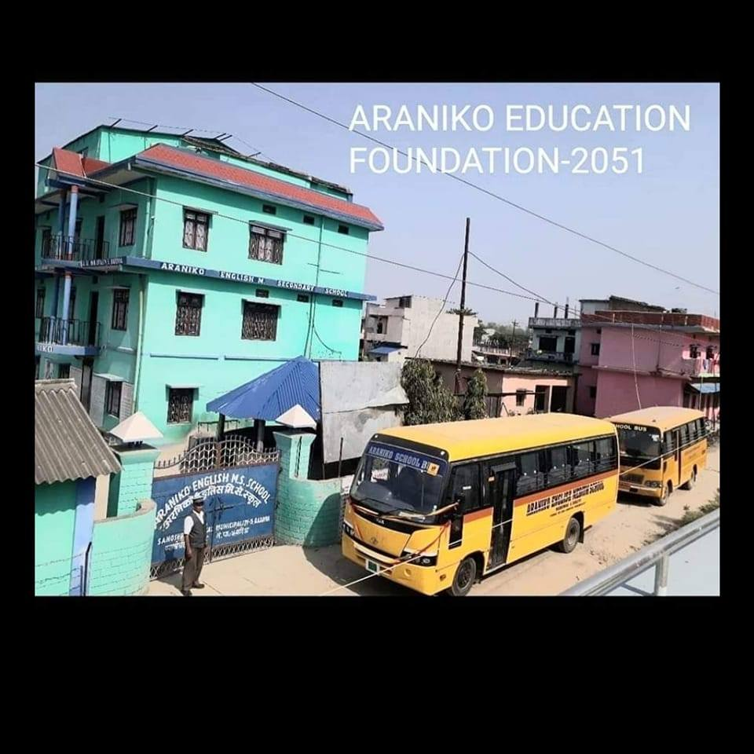
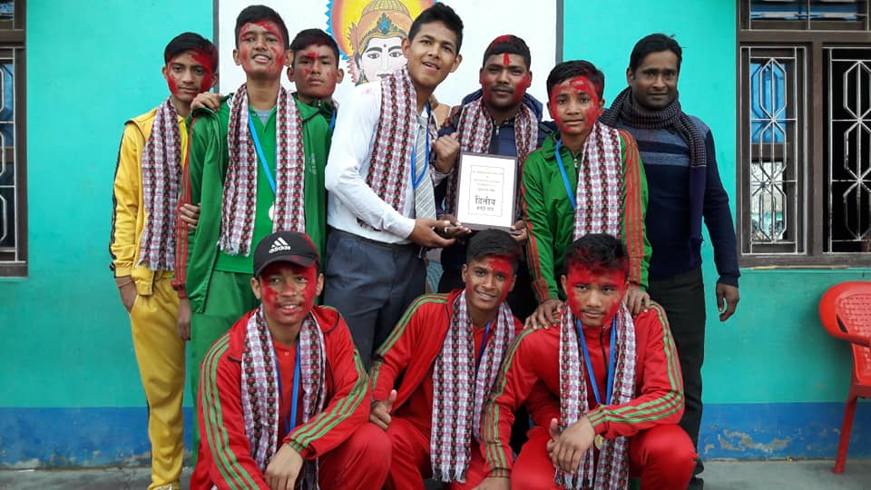

MY Education
School
I completed my secondary education from Araniko Secondary School in 2019. During my time at school, I was actively involved in various extracurricular activities such as playing basketball and participating in science fairs. I was also a member of the school's science club, where I gained valuable experience in experimenting and presenting my findings. I was also part of kabaddi team and won the second place in the mayor cup that was organised at that time and all the schools all over the muncipality participated in it.
I got 3.55 GPA in my SEE.
School
I completed my higher secondary education from Herald International college in 2021. During my time at college, I was engaging in my studies and focused in developing more knowledge so that it would help me in future and it did as I am glad that I prepared myself well.
I got 3.41 GPA in +2.
College

I am currently studying at Herald College, pursuing my Bachelor's degree in BSc (Hons) Computer Science. I am highly motivated and dedicated to my studies, and I am always eager to learn more about the latest developments in the field of computer science. I have a strong interest in programming, databases, and software development, and I hope to use my skills and knowledge to make a positive impact in the world.